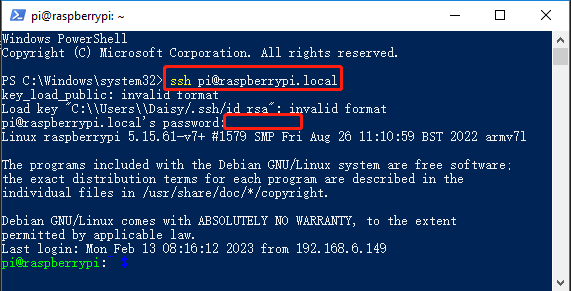

Note
Bonjour et bienvenue dans la Communauté Facebook des passionnés de Raspberry Pi, Arduino et ESP32 de SunFounder ! Plongez plus profondément dans l’univers des Raspberry Pi, Arduino et ESP32 avec d’autres passionnés.
Pourquoi rejoindre ?
Support d’experts : Résolvez les problèmes après-vente et les défis techniques avec l’aide de notre communauté et de notre équipe.
Apprendre et partager : Échangez des astuces et des tutoriels pour améliorer vos compétences.
Aperçus exclusifs : Accédez en avant-première aux annonces de nouveaux produits et aux aperçus.
Réductions spéciales : Profitez de réductions exclusives sur nos produits les plus récents.
Promotions festives et cadeaux : Participez à des cadeaux et des promotions de vacances.
👉 Prêt à explorer et à créer avec nous ? Cliquez [Ici] et rejoignez-nous aujourd’hui !
Installer OpenSSH via Powershell
Lorsque vous utilisez ssh <username>@<hostname>.local (ou ssh <username>@<IP address>) pour vous connecter à votre Raspberry Pi, mais que le message d’erreur suivant apparaît.
ssh: The term 'ssh' is not recognized as the name of a cmdlet, function, script file, or operable program. Check the spelling of the name, or if a path was included, verify that the path is correct and try again.
Cela signifie que votre système informatique est trop ancien et ne dispose pas de OpenSSH préinstallé. Vous devez suivre le tutoriel ci-dessous pour l’installer manuellement.
Tapez
powershelldans la barre de recherche de votre bureau Windows, faites un clic droit surWindows PowerShell, et sélectionnezExécuter en tant qu'administrateurdans le menu qui apparaît.
Utilisez la commande suivante pour installer
OpenSSH.Client.Add-WindowsCapability -Online -Name OpenSSH.Client~~~~0.0.1.0
Après l’installation, la sortie suivante sera affichée.
Path : Online : True RestartNeeded : False
Vérifiez l’installation en utilisant la commande suivante.
Get-WindowsCapability -Online | Where-Object Name -like 'OpenSSH*'
Il vous indiquera maintenant que
OpenSSH.Clienta été installé avec succès.Name : OpenSSH.Client~~~~0.0.1.0 State : Installed Name : OpenSSH.Server~~~~0.0.1.0 State : NotPresent
Avertissement
Si l’invite ci-dessus n’apparaît pas, cela signifie que votre système Windows est encore trop ancien et il est conseillé d’installer un outil SSH tiers, comme PuTTY.
Redémarrez maintenant PowerShell et continuez à l’exécuter en tant qu’administrateur. À ce stade, vous pourrez vous connecter à votre Raspberry Pi en utilisant la commande
ssh, où il vous sera demandé d’entrer le mot de passe que vous avez configuré précédemment.